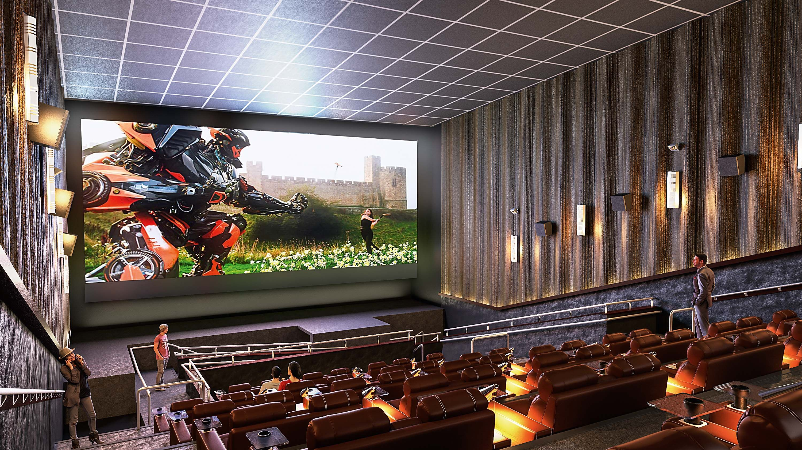

O Cine Aurora foi inaugurado em 1958 no coração da cidade, como um espaço simples, mas cheio de encanto, com cadeiras de madeira e uma tela que reunia famílias inteiras para assistir aos grandes clássicos da época. Com o passar dos anos, o cinema acompanhou as transformações da sociedade: trocou o projetor de rolo pelo digital, ampliou suas salas e manteve viva a tradição das sessões de sábado à noite. Mesmo diante da concorrência das plataformas de streaming, o Cine Aurora continua sendo um ponto de encontro cultural, onde o público não vai apenas para ver filmes, mas para reviver memórias e sentir a magia coletiva da sétima arte.
Filmes em Cartaz:
- Titanic (1997) – Romance e drama dirigido por James Cameron.
- O Senhor dos Anéis: A Sociedade do Anel (2001) – Fantasia épica dirigida por Peter Jackson.
- Vingadores: Ultimato (2019) – Filme de super-heróis da Marvel.
- Jurassic Park (1993) – Aventura e ficção científica dirigida por Steven Spielberg.
- Forrest Gump (1994) – Drama e comédia estrelado por Tom Hanks.
Formulário para reserva do(s) ingressos:
Filme escolhido:
Quantidade de ingressos:
Data da sessão:
Trailers
Assistir trailer (Titanic)Assistir trailer (Vingadores)
Assistir trailer (O Senhor dos Anéis)
Assistir trailer (Jurassic Park)
Assistir trailer (Forrest Gump)